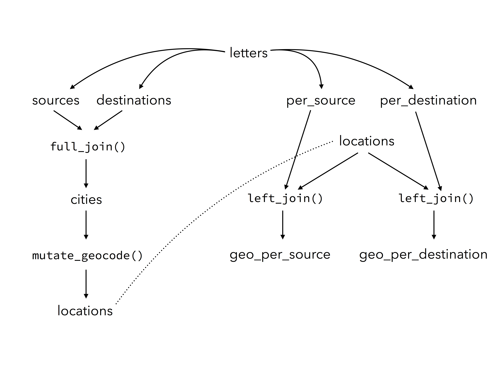

Geocoding with R
Using ggmap to geocode and map historical data
In the previous post I discussed some reasons to use R instead of Excel to analyze and visualize data and provided a brief introduction to the R programming language. That post used an example of letters sent to the sixteenth-century merchant Daniel van der Meulen in 1585. One aspect missing from the analysis was a geographical visualization of the data. This post will provide an introduction to geocoding and mapping location data using the ggmap package for R, which enables the creation of maps with ggplot. There are a number of websites that can help geocode location data and even create maps.1 You could also use a full-scale geographic information systems (GIS) application such as QGIS or ArcGIS. However, an active developer community has made it possible to complete a full range of geographic analysis from geocoding data to the creation of publication-ready maps with R.2 Geocoding and mapping data with R instead of a web or GIS application brings the general advantages of using a programming language in analyzing and visualizing data. With R, you can write the code once and use it over and over, while also providing a record of all your steps in the creation of a map.3
This post will merely scratch the surface of the mapping capabilities of R and will not enter into the domain of the more complex specific geographic packages available for R.4 Instead, it will build on the dplyr and ggplot skills discussed in my brief introduction to R. The example of geocoding and mapping with R will also provide another opportunity to show the advantages of coding. In particular, geocoding is a good example of how code can simplify the workflow for entering data. Instead of dealing with separate spreadsheets to store information about the letters and geographic information, coding makes it possible to create the geographic information directly from the letters data. The code to find the longitude and latitude of locations can be saved as a R script and rerun if new data is added to ensure that the information is always kept up to date.
Preparing the data with dplyr
In this example, I will use the same database of letters sent to Daniel van der Meulen in 1585 as I did in the previous post. You can find the data and the R script that goes along with this tutorial on GitHub. Before getting into the database of letters and figuring out how to geocode the locations found in the data, it is necessary to set up the environment in R by loading the libraries that we will be using. Here, I load both the tidyverse library to import and manipulate the data and the ggmap library to do the actual geocoding and mapping.
library(tidyverse)
library(ggmap)As in the previous post, the data is loaded through the read_csv() function from the readr package. It is best to keep the names of objects consistent across scripts. Therefore, I name the object letters with the assignment operator. Printing out the contents reveals the that letters is a tibble with 114 letters and four columns.
letters <- read_csv("data/correspondence-data-1585.csv")
letters
#> # A tibble: 114 x 4
#> writer source destination date
#> <chr> <chr> <chr> <date>
#> 1 Meulen, Andries van der Antwerp Delft 1585-01-03
#> 2 Meulen, Andries van der Antwerp Haarlem 1585-01-09
#> 3 Meulen, Andries van der Antwerp Haarlem 1585-01-11
#> 4 Meulen, Andries van der Antwerp Delft 1585-01-12
#> 5 Meulen, Andries van der Antwerp Haarlem 1585-01-12
#> 6 Meulen, Andries van der Antwerp Delft 1585-01-17
#> 7 Meulen, Andries van der Antwerp Delft 1585-01-22
#> 8 Meulen, Andries van der Antwerp Delft 1585-01-23
#> 9 Della Faille, Marten Antwerp Haarlem 1585-01-24
#> 10 Meulen, Andries van der Antwerp Delft 1585-01-28
#> # ... with 104 more rowsTo do the actual geocoding of the locations I will be using the mutate_geocode() function from the ggmap package. To geocode a number of locations at one time, the function requires a data frame with a column containing the locations we would like to geocode. The goal, then, is to get a data frame with a column that contains all of the distinct locations found in the letters data frame. In the introduction to R post I used the distinct() function to get data frames with the unique sources and destinations. We can rerun that code here and look at the results.
sources <- distinct(letters, source)
destinations <- distinct(letters, destination)
sources
#> # A tibble: 9 x 1
#> source
#> <chr>
#> 1 Antwerp
#> 2 Haarlem
#> 3 Dordrecht
#> 4 Venice
#> 5 Lisse
#> 6 Het Vlie
#> 7 Hamburg
#> 8 Emden
#> 9 Amsterdam
destinations
#> # A tibble: 5 x 1
#> destination
#> <chr>
#> 1 Delft
#> 2 Haarlem
#> 3 The Hague
#> 4 Middelburg
#> 5 BremenA glance at the two data frames shows that neither provide exactly what I are looking for. Neither the sources nor the destinations data frames include all of the locations that we want to geocode. It would be possible to geocode both the sources and destinations data frames, but this would place the geocoded information in two different data frames, which is less than ideal. Instead, we can join the two data frames together using the join functions in dplyr. Coming from the world of spreadsheets, the join functions are a revelation, opening up seemingly endless possibilities for data manipulation.
The dplyr package includes a number of functions to join two data frames together to create a single data frame. The join functions use overlapping columns of data contained in both data frames, called keys, to match up the data. There are three join functions that are used most often. The left_join() keeps all observations from the left, or first, data frame, while dropping all rows from the right, or second, data frame that do not have a match in the left data frame. The inner_join() only keeps rows that contain matching keys in both data frames. Conversely, the full_join() brings together all rows from both the left and right data frames. The differences between these functions may not be immediately apparent, but you can experiment with them to see the variety of outputs they create.
Using sources as the left and destinations as the right data frames, a left_join() creates a new object with 9 rows, an inner_join() results in only one row, and a full_join() contains 13 observations. Thus, the full_join() is what we are looking for. The full_join() function — like the other join functions — takes three arguments: the two data frames to join and the key column by which they are to be joined. In this case, some extra work needs to be done to the identify the key columns. The key columns are the only columns in the two data frames, but because they have different names, it is necessary to declare that they are equivalent. This is done with the help of the concatenate or combine function, c().5 The below command creates a new data frame that I have called cities, which brings together the “source” column with the “destination” column and therefore contains all of the locations found in the letters data frame.
cities <- full_join(sources, destinations, by = c("source" = "destination"))
cities
#> # A tibble: 13 x 1
#> source
#> <chr>
#> 1 Antwerp
#> 2 Haarlem
#> 3 Dordrecht
#> 4 Venice
#> 5 Lisse
#> 6 Het Vlie
#> 7 Hamburg
#> 8 Emden
#> 9 Amsterdam
#> 10 Delft
#> 11 The Hague
#> 12 Middelburg
#> 13 BremenPrinting out the cities data frame shows that there are 13 distinct locations in the letters data. However, the structure of the cities object is less than ideal. The name of the column is “source,” which was taken over from the sources data frame, but this is not an accurate description of the data in the column. This can be fixed with the help of rename(), which uses the structure of new_name = old_name. Here, I change the name of the “source” column to “place” and then print out the first two rows with the head() function to show the change in the column name. Notice that using the cities object within the rename() function and using the same name for the result overwrites the original object with the new one. Alternatively, you could name the new object a different name such as cities1.6
cities <- rename(cities, place = source)
head(cities, n = 2)
#> # A tibble: 2 x 1
#> place
#> <chr>
#> 1 Antwerp
#> 2 HaarlemGeocoding with ggmap
We now have an object with the basic structure needed to geocode the locations. However, if you run mutate_geocode() on the cities object as it is, you will receive an error. The error is a good example of a common frustration with coding. Computers are picky, and because humans also write flawed code, bugs exist, making computers picky in odd ways. In this case, we are running into a problem in which the mutate_geocode() function will not work on tibbles. As noted in my previous post, tibbles are a special kind of data frame used by the tidyverse set of packages. It is usually easier to work with tibbles in the tidyverse workflow, but here it is necessary to convert the tibble to a standard data frame object with as.data.frame(). I give the result a new name to distinguish it from the cities tibble.
cities_df <- as.data.frame(cities)The locations data from the letters sent to Daniel is now ready to be geocoded. The mutate_geocode() function uses Google Maps to find the longitude and latitude of each location. The two necessary arguments are the data frame and the name of the column with the location data. The function can be used to find more information about each location, including the country and region, but here I just have the function return the longitude and latitude data. The function will query Google Maps, and so you must have an internet connection. This makes running the command relatively slow, especially if your data contains a large amount of locations. There is also a limit of 2,500 queries per day, so you may have to find other methods if you are geocoding thousands of locations.
locations_df <- mutate_geocode(cities_df, place)Because mutate_geocode() necessitates an internet connection, is somewhat slow to run, and has a daily limit, it is not something that you want to do all the time. It is a good idea to save the results by writing the object out to a csv file. Before doing this, however, we should inspect the data and make sure everything is correct. Let’s start by printing out the locations_df object and see what we have.
locations_df
#> place lon lat
#> 1 Antwerp 4.402464 51.21945
#> 2 Haarlem 4.646219 52.38739
#> 3 Dordrecht 4.690093 51.81330
#> 4 Venice 12.315515 45.44085
#> 5 Lisse 4.557483 52.25793
#> 6 Het Vlie 5.183333 53.30000
#> 7 Hamburg 9.993682 53.55108
#> 8 Emden 7.206010 53.35940
#> 9 Amsterdam 4.895168 52.37022
#> 10 Delft 4.357068 52.01158
#> 11 The Hague 4.300700 52.07050
#> 12 Middelburg 3.610998 51.49880
#> 13 Bremen 8.801694 53.07930At a quick glance, the result looks like what we would expect. locations_df is a data frame with three columns called “place,” “lon,” and “lat” with the latter two representing longitude and latitude of the location named in the first column. One thing that we might want to change, though this step is not necessary, is to convert the data frame back to a tibble, which can be done with the as_tibble() function.
locations <- as_tibble(locations_df)A quick look at the values of the longitude and latitude columns in the locations data would seem to indicate that the geocoding process occurred correctly. All of the longitude and latitude values are within a reasonable range given the cities in the data. However, because the data given to the Google Maps query consisted of only the names of the cities, it is always worth double checking the returned values. As anyone who has ever used Google Maps before knows, it is possible that the query could return the location of a different place that has the same name.7
One way to check that the geocoding was done correctly is to map the locations with the mapview package. Using mapview requires converting the locations tibble to yet another format. This is done with the simple features package, which brings us to the world of GIS with R. The first step is to load the sf and mapview packages.
library(sf)
library(mapview)I will not get into the details of the sf package and type of objects that it creates here, but the function to transform the locations tibble into an sf object is understandable even without knowing the details. The function to make an sf object takes three main arguments. The first two are the data frame to be converted and the columns that contain the geographic data. This second argument uses the c() function to combine the “lon” and “lat” columns. The third argument determines the coordinate reference system (crs) for the data. Here, I indicate that I want the longitude and latitude to be plotted using the World Geographic System 1984 projection, which is referenced as European Petroleum Survey Group (EPSG) 4326. Geographic jargon aside, what matters at this stage is that EPSG 4326 is the projection used by web maps such as Google Maps.8
locations_sf <- st_as_sf(locations, coords = c("lon", "lat"), crs = 4326)With the data in the correct format, a simple call to the mapview() function creates an interactive map with all the locations plotted as points. You can click on a point to see its name and compare it to the locations on the map. With this data, the accuracy of the location only needs to be at the city level. The location within the city is not relevant. Inspecting the data from the map shows that all of the locations were correctly geocoded.
mapview(locations_sf)I can now save the locations data using the readr package and a function similar to that used to load data. I will use the write_csv() function to save the data as a csv file. Here, I save the locations tibble, but you could also save the other forms of the locations data. The second argument tells the function where to save the csv and what to call the file. Here, I place the file in the same folder as the “correspondence-data-1585.csv” and name the file “locations.csv”.
write_csv(locations, "data/locations.csv")Mapping with ggmap
Now that we have successfully geocoded the locations from which Daniel’s correspondents sent letters and in which Daniel received them, we can move on to the task of plotting the locations on a map with ggmap.9 ggmap is essentially an extension of ggplot. It enables you to plot a map as the background of a ggplot graph. The two main plotting features of ggmap are the get_map() function, which downloads a map from a specified map provider, and the ggmap() function that plots the downloaded map on a ggplot plot. Once a map is downloaded and plotted, it is then possible to use the normal grammar of gglot to visually represent that data on the map.
The get_map() function can access data from three different map providers: Google Maps, Open Street Maps, and Stamen Maps. In this example, I will use Google Maps and the get_googlemap() function. The challenge with the get_map() function is downloading a map with a zoom level and location that shows all of the data with minimal extra space. We need two pieces of information to do this for get_googlemap(): a location for the center of the map and a zoom level between 1 and 21.10 Figuring out the best center and zoom level for a map may take some trial and error. However, the work that we have already done can help to make an educated first guess. We can rerun mapview(locations_sf) and look at the details provided by the map. The map produced by mapview() shows the longitude and latitude at your cursor position and tells the zoom level of the map. We can use the cursor to guess a good center of the map or zoom in to find a city, which we can then geocode. After a couple of tries, I found that Mannheim, Germany works as a good center for a map with a zoom level of 6. I can get the coordinates of Mannheim with the generic geocode() function and then place the coordinates into the get_googlemap() function. The only alteration that needs to be made is to glue together the longitude and latitude values into one object with the concatenate function, c().
geocode("mannheim")
#> lon lat
#> 1 8.466039 49.48746
map <- get_googlemap(center = c(8.4, 49.5), zoom = 6)We can look at what the map looks like by calling the ggmap() function.
ggmap(map)Given the historical nature of the data, some of the normal features of a Google Map are problematic. The modern road system obviously did not exist in the sixteenth century, nor are the modern political boundaries useful for the data. In the below command, I change the aesthetics of the original map using the color argument and turn off features of the map by using commands from the Google Maps API.
bw_map <- get_googlemap(center = c(8.4, 49.5), zoom = 6,
color = "bw",
style = "feature:road|visibility:off&style=element:labels|visibility:off&style=feature:administrative|visibility:off")Now let’s see what the map looks like, but this time let’s add the location data. This is done using the normal ggplot functions. Here, I want to add points for each place in the locations data that we created above. The aes() function within geom_point() tells ggplot that the x-axis corresponds to the longitude and the y-axis to the latitude of each place.
ggmap(bw_map) +
geom_point(data = locations, aes(x = lon, y = lat))The resulting map is rather sparse and does not provide much information, but it gives a good starting point from which to build a more informative map.
Adding data with dplyr
The above map used the locations data to plot Daniel van der Meulen’s correspondence in 1585, but because it did not use the letters data, the map could not tell us anything about the number of letters sent from or received in each location. Visualizing this information is a two-step process. Firstly, it is necessary to find out how many letters were sent from and received in each location. Because we need to distinguish between sent and received locations, this data will be contained in two data frames. To do this, we can reuse the per_source and per_destination code discussed in the previous post, which summarizes the amount of letters sent from and to each location. Secondly, we have to join the longitude and latitude information from the locations data frame to the per_source and per_destination data frames.
As a reminder, to create the per_source and per_destination objects I will use the group_by() and summarise() workflow. This groups the data by one or more defined variables and creates a new column that counts the number of unique observations from the variable(s). Below, I make per_source and per_destination data frames and print out the per_destination object to show its form.
per_source <- letters %>%
group_by(source) %>%
summarise(count = n()) %>%
arrange(desc(count))
per_destination <- letters %>%
group_by(destination) %>%
summarise(count = n()) %>%
arrange(desc(count))
per_destination
#> # A tibble: 5 x 2
#> destination count
#> <chr> <int>
#> 1 Delft 95
#> 2 Haarlem 8
#> 3 Bremen 6
#> 4 The Hague 3
#> 5 Middelburg 2The per_source and per_destination data frames are in the basic structure that we want, but we need to add longitude and latitude columns to both of the objects so that they can be plotted on our map. Here, I will use a left_join(). As noted above, a left_join() only keeps the observations from the first data frame in the function. In other words, the result of a left_join() will have the same number of rows as the original left data frame, while adding the longitude and latitude columns from the locations data frame. The data frames will be joined by the columns containing the name of the cities. Because these “key” columns have different names, it is again necessary to denote their equivalency with c(). Below, I print out the newly created geo_per_destination data frame to show its structure.
geo_per_source <- left_join(per_source, locations, by = c("source" = "place"))
geo_per_destination <- left_join(per_destination, locations, by = c("destination" = "place"))
geo_per_destination
#> # A tibble: 5 x 4
#> destination count lon lat
#> <chr> <int> <dbl> <dbl>
#> 1 Delft 95 4.357068 52.01158
#> 2 Haarlem 8 4.646219 52.38739
#> 3 Bremen 6 8.801694 53.07930
#> 4 The Hague 3 4.300700 52.07050
#> 5 Middelburg 2 3.610998 51.49880I now have the necessary data to create a map that will distinguish between the sources of the letters and their destinations and will allow me to show the quantities of letters sent from and received in each location.
Mapping the data
Creating a quality visualization with ggplot involves iteration. Because the different parts of the plot are all written out in code, aspects can be added, subtracted, or modified until a good balance is found. Let’s start by creating a basic map using the geo_per_source and geo_per_destination data. The structure of the command is similar to that used to make the first map, but now that I am using information from two data frames, I need to use two geom_point() functions. There is also a small change to the ggmap() function to have the map take up the entire plotting area so that the longitude and latitude scales do not show. The only change to the geom_point() function is the addition of different colors for the two sets of points. This makes it easier to distinguish between places from which Daniel’s correspondents sent letters and places where he received them. Notice that the argument for the color of the points is placed outside of the aes() function. This makes all of the points plotted from each data frame a single color as opposed to mapping a change in color to a variable within the data. In this instance, I chose to specify color by name, but it is also possible to use rgb values, hex values, or a number of different color palettes.11
ggmap(bw_map) +
geom_point(data = geo_per_destination,
aes(x = lon, y = lat), color = "red") +
geom_point(data = geo_per_source,
aes(x = lon, y = lat), color = "purple")This plot is much better than what we started with, but it still has a couple of issues. In the first place, it does not communicate any information about the quantity of letters. In addition, because the points are opaque, it is not clear that letters were both sent from and to Haarlem. The former issue can be rectified by using the size argument within the aes() function. This will tell ggplot to vary the size of each of the points in proportion to the count column. By default, the size aesthetic creates a legend to indicate the scale used. In the ggmap() function I place the legend in the top right corner of the map since there are no data points there. The latter issue is solved by adding an alpha argument to the two geom_point() functions. This argument is placed outside of the aes() function, because it is an aspect we want to apply to all points. Alpha describes the translucency of an object and takes values between 1 (opaque) and 0 (translucent).
ggmap(bw_map) +
geom_point(data = geo_per_destination,
aes(x = lon, y = lat, size = count),
color = "red", alpha = 0.5) +
geom_point(data = geo_per_source,
aes(x = lon, y = lat, size = count),
color = "purple", alpha = 0.5)The above map is more informative, but it is hardly a finished product. For instance, there is no explanation for the differences in the color of the points, the smallest points are not easy to see, and there are no labels to indicate the names of the cities. Let’s deal with these issues one at a time to create a more fully fleshed out map. This will serve as an opportunity to demonstrate both the flexibility and complexity of ggplot code.12
The different colors for sent and received locations are not defined in a legend in the previous plot, because ggplot only creates a legend for arguments within an aes() function. Even though the color does not change within the data for each geom_point() function, it is possible to place the color in the aes() function when used in tandem with scale_color_manual(). Inside the aes() function the color is associated with a name that will appear in the legend. The actual color to be used is defined in a separate scale_color_manual() function with the values argument.13
A similar type of scale function also makes it possible to manually control the minimum and maximum size of the points drawn by the size = count argument within the aes() functions. For this last plot, I decided to make the minimum size of the point 2 and the maximum size 9. The range of the sizes for points is a good example of a plot element that you can play around with, trying out different sizes until you find one that works. Note too, that the best sizes of plot elements will also depend on the format in which the finished plot will be presented.
In changing the background map from the default Google Map, I took out the city labels, but this makes it difficult to know which cities are represented by the different points. The plot only contains fourteen points, making it possible to label each point without too much clutter. In ggplot, labels are geoms; they are distinct elements placed on a plot with separate geom functions. Labeling points can be done with either geom_text() or geom_label(). geom_text() places text at the indicated position, while geom_label() places the text within a white text box. In addition to x and y coordinates, the two geoms require a label argument, which indicates the variable that should be used for the text. By default geom_text() and geom_label() are placed exactly on the x and y coordinates given by the data. It is possible to nudge the placement of the labels with the nudge_x and nudge_y arguments. However, instead of using these, I will take advantage of the geom_text_repel() function from the ggrepel package. This package automatically chooses the placement of individual labels to ensure that they do not overlap. Note too that I use the locations data frame for the data of the geom, since locations contains the longitude and latitude of each point on the map.
The final touches to the map can be made by ensuring that all of the elements are clearly noted. Labels for the plot itself can be made with the labs() function. For this plot, I will add a descriptive title and change the labels for the two legends. By default, ggplot uses the name of the indicated column as the label for the legend. This is shown in the above map, where the size of the point is labeled as “count.” The default label can be replaced with a more informative one by indicating the aesthetic to be changed. Here, I will rename the size aesthetic as “Letters.” In addition, I chose not to have a label for the color aesthetic, which is indicated by “NULL”. Finally, I altered the size of the points drawn in the color legend to a larger size. This is done with the guides() function, which changes the scales of different aspects of the plot. In this case, I use the override.aes argument to have the red and purple points in the legend be drawn at size = 6.
library(ggrepel)
ggmap(bw_map) +
geom_point(data = geo_per_destination,
aes(x = lon, y = lat, size = count, color = "Destination"),
alpha = 0.5) +
geom_point(data = geo_per_source,
aes(x = lon, y = lat, size = count, color = "Source"),
alpha = 0.5) +
scale_color_manual(values = c(Destination = "red", Source = "purple")) +
scale_size_continuous(range = c(2, 9)) +
geom_text_repel(data = locations, aes(x = lon, y = lat, label = place)) +
labs(title = "Correspondence of Daniel van der Meulen, 1585",
size = "Letters",
color = NULL) +
guides(color = guide_legend(override.aes = list(size = 6)))
Conclusion
The above map demonstrates the geographic spread of Daniel van der Meulen’s correspondence in 1585 and shows the relative significance of the location of his correspondents and the different places in which he received letters throughout the year. More important than the details of the map for the purposes of this post is the process by which it was created. One interesting feature that I would like to emphasize in concluding is that the map uses data from three different data frames or tables: geo_per_destination, geo_per_source, and locations. All three of these data frames derive from the original letters data, while they in turn were the product of yet more data frames. By my count, running the commands contained in this post leads to the creation of 12 different data frame like objects. The below diagram outlines the workflow. The ability to split, subset, transform, and then join newly created tables in a variety of ways is a very powerful and flexible workflow. Because the data frames can be recreated by running the code, there is minimal overhead in managing them, especially in comparison to creating tables within spreadsheets. In this case, I would only recommend that the locations data frame be saved for easy access in other R scripts and sessions. The other objects can be created on demand, or even more can be added, while the individual aspects of the map can be endlessly tweaked using the power of ggplot.

Footnotes
Geocoding can be done with websites such as geonames and the service provided by Texas A&M. There are also a number of options for creating maps on the web.↩︎
See the Introduction of Robin Lovelace, Jakub Nowosad, and Jannes Meunchow, Geocomputation with R for a good overview of the GIS capabilities of R.↩︎
Alex David Singleton, Seth Spielman, and Chris Brunsdon, “Establishing a Framework for Open Geographic Information Science,” International Journal of Geographical Information Science, 30 (2016): 1507-1521.↩︎
A full list of geographic packages for R can be found at R Packages for the Analysis of Spatial Data. In future posts I will discuss some of these packages and their capabilities.↩︎
In this command the quotations around “source” and “destination” are necessary. They tell the function that these are strings of characters.↩︎
It is good practice to stay away from overwriting objects until you know whether the code works. However, if you mess up, it is always possible to recreate the original object by rerunning the code that created it.↩︎
For instance, geocoding “Naples” will return the longitude and latitude of Naples, Florida and not Naples, Italy.↩︎
If you want to get an idea of how an
sfobject differs from a normal tibble or data frame, you can print out thelocations_sfobject. This shows that the longitude and latitude columns have been combined into a special type of column calledsimple_featureand named “geometry”, while additional information about the CRS is also provided.↩︎For a fuller discussion of
ggmap, see David Kahle and Hadley Wickham, “ggmap: Spatial Visualization with ggplot2.”↩︎A zoom level of 1 is the most zoomed out, while 21 is the most zoomed in.↩︎
W3 Schools has a good discussion on the use of rgb and hex colors. For the use of colors with
ggplot, see Hadley Wickham, ggplot2: Elegant Graphics for Data Analysis, Second edition (Springer, 2016), 133–145. A full list of the named colors available in R can be found here↩︎For a full discussion of the powers of
ggplot, see Wickham, ggplot2.↩︎Wickham, ggplot, 142–143.↩︎